Bloco 1
Curso de TI Basico
Excel e programas do Office para quem esta comecando do zeroEntrar no curso
Digite o nome completo cadastrado e o CPF usado como senha. Depois de entrar, o resultado do check final sera enviado com o seu cadastro.
Como usar este curso
Este material foi feito para quem nunca teve contato ou quase nunca usou um computador. Vamos considerar que o aluno esta usando um notebook. Por isso, antes de abrir Word, Excel ou PowerPoint, o curso explica teclado, touchpad, tecla Fn, bateria, carregador, Wi-Fi, janelas, arquivos e os cuidados mais basicos.
Em cada aula, leia a explicacao, acompanhe o passo a passo no computador e faca a atividade. Nao pule a pratica. Informatica se aprende fazendo, errando, tentando de novo e ganhando confianca aos poucos.
Conhecendo o notebook antes de comecar
Antes de usar programas, voce precisa conhecer a maquina que esta na sua frente. O notebook junta tela, teclado, mouse, bateria e computador em um so aparelho. Ele pode funcionar fora da tomada por um tempo, mas precisa ser carregado. Se a bateria acabar, ele pode desligar e voce pode perder o que nao salvou.
Partes principais do notebook
- Tela: mostra tudo o que voce esta fazendo.
- Teclado: usado para digitar letras, numeros, acentos e comandos.
- Touchpad: quadrado sensivel ao toque que substitui o mouse.
- Botao power: liga o notebook. Em alguns modelos fica no teclado.
- Carregador: alimenta o notebook e carrega a bateria.
- Entradas USB: servem para mouse, pendrive, teclado externo e outros acessorios.
- Entrada HDMI: pode ligar o notebook em TV, projetor ou monitor.
Como ligar com seguranca
- Coloque o notebook em uma mesa firme.
- Abra a tela com cuidado, segurando pelo centro ou pelos dois lados.
- Conecte o carregador se a bateria estiver baixa.
- Aperte o botao power uma vez. Nao fique apertando varias vezes.
- Espere. O notebook pode demorar alguns segundos ou minutos para iniciar.
- Quando aparecer a tela de entrada, digite a senha, se houver.
Touchpad: como usar o mouse do notebook
Movimentos basicos
- Deslize um dedo para mover a seta.
- Dê um toque leve para clicar.
- Dê dois toques rapidos para abrir algo.
- Use dois dedos para rolar a pagina para cima ou para baixo.
- Toque com dois dedos para abrir o menu do botao direito.
Se estiver dificil
- Use um mouse USB comum, se tiver.
- Movimente o dedo devagar.
- Evite apoiar a mao inteira no touchpad.
- Se a seta sumir, mexa o dedo no touchpad e observe a tela.
Teclado do notebook
O teclado do notebook pode parecer confuso no inicio, mas ele tem grupos. As letras ficam no centro. Os numeros ficam na parte superior. Algumas teclas especiais ficam nas bordas.
| Tecla | Para que serve |
|---|---|
| Enter | Confirma uma acao ou pula para a proxima linha. |
| Backspace | Apaga o que esta antes do cursor. |
| Delete | Apaga o que esta depois do cursor ou apaga um item selecionado. |
| Shift | Faz letra maiuscula temporaria e acessa simbolos da parte de cima das teclas. |
| Caps Lock | Trava letras maiusculas. Aperte de novo para desligar. |
| Ctrl | Usada em atalhos, como Ctrl+C, Ctrl+V e Ctrl+S. |
| Alt | Usada em atalhos e combinacoes. |
| Esc | Cancela ou sai de uma tela, menu ou apresentacao. |
| Tab | Avanca para o proximo campo ou cria recuo em textos. |
| Fn | Ativa funcoes especiais do notebook, como brilho, volume e Wi-Fi. |
Tecla Fn: o que e e por que existe
Em notebooks, a tecla Fn funciona como uma segunda camada do teclado. Ela geralmente fica perto do Ctrl ou do botao Windows. Quando voce segura Fn e aperta uma tecla com desenho, ativa uma funcao especial.
- Fn + tecla de sol: aumenta ou diminui o brilho da tela.
- Fn + tecla de alto-falante: aumenta, diminui ou silencia o volume.
- Fn + tecla de Wi-Fi: liga ou desliga conexao sem fio em alguns modelos.
- Fn + tecla de touchpad: ativa ou desativa o touchpad em alguns notebooks.
- Fn + F5, F6, F7 etc.: varia conforme a marca. Sempre olhe o desenho na tecla.
Como digitar caracteres comuns
- Espaco: tecla grande na parte de baixo.
- Ponto final: tecla com ".".
- Virgula: tecla com ",".
- Arroba: em muitos teclados e AltGr+Q ou AltGr+2. Em alguns, use Ctrl+Alt+Q.
- Acento agudo: aperte a tecla do acento e depois a vogal. Exemplo: acento + a = á.
- Til: aperte a tecla ~ e depois a letra. Exemplo: ~ + a = ã.
- Ç: em teclado brasileiro, existe uma tecla propria para ç.
Treino obrigatorio antes da Aula 01
- Abra um bloco de notas ou documento em branco.
- Digite seu nome completo.
- Digite uma frase com acento: Hoje vou aprender informatica basica.
- Apague uma palavra usando Backspace.
- Digite uma letra maiuscula usando Shift.
- Aumente e diminua o volume usando Fn, se o notebook exigir.
- Aumente e diminua o brilho usando Fn, se o notebook exigir.
Primeiros passos no computador
O computador e uma ferramenta de trabalho e estudo. Ele guarda arquivos, permite escrever textos, fazer contas, acessar a internet e criar apresentacoes. Para comecar, o aluno precisa entender as partes principais: monitor, teclado, mouse, gabinete ou notebook, entrada USB e impressora, quando houver.
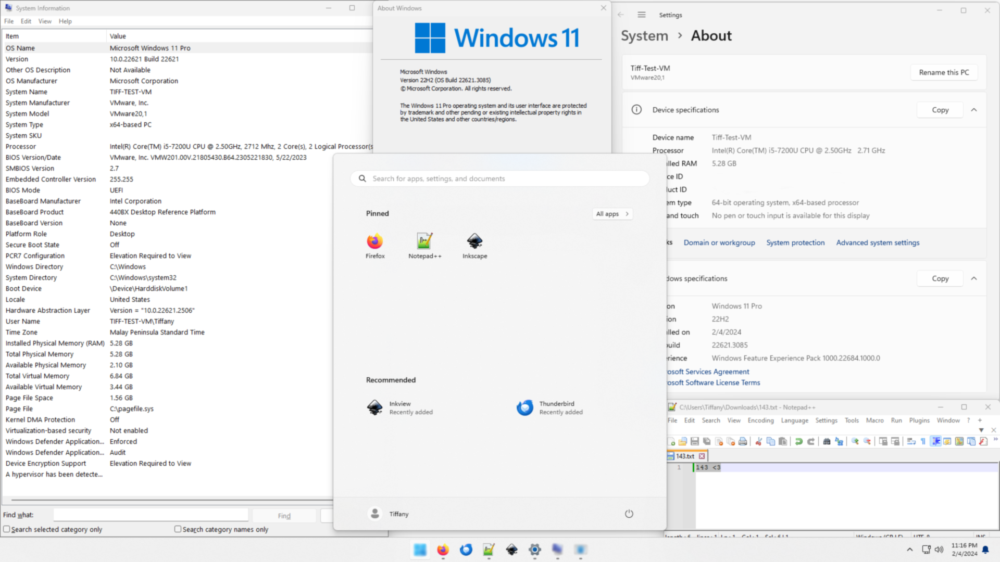
O que voce vai aprender
- Ligar e desligar o computador corretamente.
- Usar mouse, teclado, janelas e area de trabalho.
- Criar uma pasta para guardar os arquivos do curso.
Passo a passo
- Ligue o computador e espere a tela inicial aparecer.
- Use o mouse para abrir o Explorador de Arquivos.
- Entre em Documentos.
- Crie uma pasta chamada Curso de TI.
- Dentro dela, crie as pastas Word, Excel, PowerPoint e Projeto Final.
Passo a passo bem devagar
- Olhe para a parte de baixo da tela. Ali costuma ficar a barra de tarefas.
- Procure o icone de uma pasta amarela. Esse e o Explorador de Arquivos.
- Se nao encontrar, clique no botao Iniciar e digite Explorador de Arquivos.
- Clique uma vez no resultado que aparecer.
- Na lateral esquerda, procure Documentos. Clique uma vez.
- Em um espaco vazio da janela, clique com o botao direito do mouse ou toque com dois dedos no touchpad.
- Escolha Novo e depois Pasta.
- Digite Curso de TI. Nao precisa apagar nada se o nome ja estiver selecionado.
- Aperte Enter para confirmar o nome da pasta.
- Dê dois cliques na pasta Curso de TI para entrar nela.
- Repita o processo para criar as pastas Word, Excel, PowerPoint e Projeto Final.
Se algo der errado
- Se criou a pasta com nome errado, clique nela uma vez, aperte F2, digite o nome certo e aperte Enter.
- Se abriu uma pasta sem querer, use a seta Voltar no canto superior esquerdo da janela.
- Se fechou a janela, abra o Explorador de Arquivos de novo. O arquivo nao some por fechar a janela.
- Se nao sabe onde esta, volte para Documentos e procure a pasta Curso de TI.
Pratique
Crie um arquivo de anotacoes, renomeie para anotacoes-aula-01 e mova para a pasta Curso de TI.
Exercicio guiado da Aula 01
Crie esta estrutura exatamente assim:
- Curso de TI
- Curso de TI > Word
- Curso de TI > Excel
- Curso de TI > PowerPoint
- Curso de TI > Projeto Final
Depois explique em voz alta: "Meus arquivos do curso estao dentro de Documentos, na pasta Curso de TI".
Voce aprendeu se conseguir
- Abrir uma pasta sozinho.
- Criar e renomear arquivos.
- Explicar onde seus arquivos do curso estao salvos.
Arquivos, pastas e atalhos
Arquivo e tudo aquilo que fica salvo no computador: uma foto, uma planilha, um texto, uma apresentacao ou um PDF. Pasta e o local usado para guardar e organizar arquivos. Quando a pessoa nao organiza suas pastas, ela perde tempo procurando documentos e pode apagar algo importante sem querer.
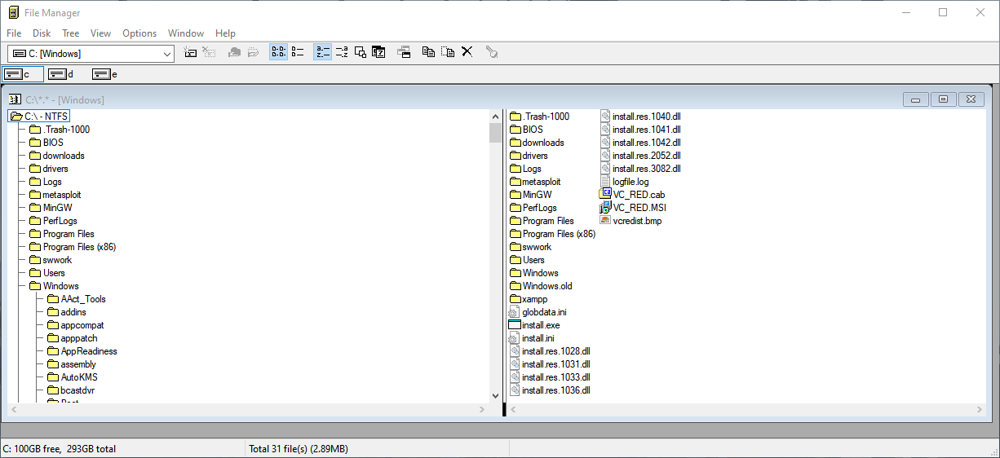
Tipos comuns de arquivos
- DOCX: documento do Word.
- XLSX: planilha do Excel.
- PPTX: apresentacao do PowerPoint.
- PDF: documento fechado para envio ou impressao.
- JPG e PNG: imagens.
Como entender o nome de um arquivo
Um arquivo geralmente tem nome e tipo. Em lista-de-compras.xlsx, o nome e lista-de-compras e o tipo e XLSX. O tipo ajuda o Windows a saber qual programa deve abrir o arquivo. Se for DOCX, abre no Word. Se for XLSX, abre no Excel.
Atalhos essenciais
- Ctrl+C copia.
- Ctrl+V cola.
- Ctrl+X recorta.
- Ctrl+Z desfaz.
- Ctrl+S salva.
- Ctrl+A seleciona tudo.
Como usar um atalho
Para usar Ctrl+C, segure a tecla Ctrl com um dedo e, sem soltar, aperte a letra C. Depois solte as duas. Nao e para apertar Ctrl, soltar, e depois apertar C. As teclas precisam ser usadas juntas.
| Situacao | Atalho | O que acontece |
|---|---|---|
| Copiar um texto ou arquivo | Ctrl+C | Guarda uma copia temporaria. |
| Colar no destino | Ctrl+V | Coloca a copia no lugar escolhido. |
| Desfazer erro | Ctrl+Z | Volta uma acao. |
| Salvar trabalho | Ctrl+S | Grava as alteracoes no arquivo. |
Pratique
Crie tres arquivos de teste, copie um deles para outra pasta, renomeie todos com nomes claros e exclua apenas o arquivo que nao sera usado. Depois, abra a lixeira e restaure o arquivo.
Erros comuns nesta aula
- Arrastar um arquivo sem querer para outra pasta. Se acontecer, use Ctrl+Z.
- Clicar duas vezes quando precisava clicar uma vez. Se abriu algo, feche e tente de novo.
- Esquecer de salvar. Use Ctrl+S varias vezes durante o curso.
- Apagar um arquivo e se assustar. Primeiro procure na Lixeira.
Word: criando seu primeiro documento
O Word serve para criar documentos de texto, como curriculos, comunicados, cartas, trabalhos escolares, contratos simples e relatorios. Um bom documento precisa ser facil de ler, ter titulo, paragrafos organizados e poucas cores.
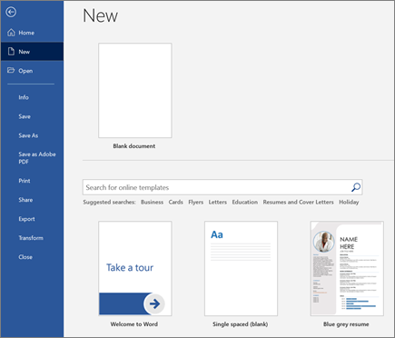
Passo a passo
- Abra o Word e escolha Documento em branco.
- Digite o titulo Apresentacao Pessoal.
- Digite seu nome completo.
- Escreva um paragrafo falando quem voce e.
- Crie uma lista com tres habilidades.
- Salve o arquivo com o nome apresentacao-pessoal.docx.
Passo a passo bem devagar no Word
- Clique no botao Iniciar do Windows.
- Digite Word.
- Clique em Word quando o programa aparecer.
- Se aparecer uma tela com modelos, escolha Documento em branco.
- Quando a pagina branca aparecer, clique dentro dela.
- Digite o titulo Apresentacao Pessoal.
- Aperte Enter duas vezes para criar espaco.
- Digite seu nome completo.
- Aperte Enter e escreva uma frase sobre voce.
- Para salvar, aperte Ctrl+S.
- Escolha a pasta Curso de TI > Word.
- Digite o nome apresentacao-pessoal e clique em Salvar.
Formatacao basica
Use negrito para destacar informacoes importantes, aumente o tamanho do titulo e mantenha o texto principal em tamanho confortavel. Evite usar muitas fontes diferentes. Um documento simples e organizado passa mais seriedade.
Atividade
Crie uma apresentacao pessoal com titulo centralizado, texto justificado e lista de habilidades.
Modelo para copiar e adaptar
Titulo: Apresentacao Pessoal
Texto: Meu nome e __________. Estou aprendendo informatica para melhorar meus estudos, meu trabalho e minha organizacao.
Lista: Minhas habilidades: pontualidade, vontade de aprender, organizacao.
Word: curriculo, tabelas e imagens
Nesta aula, o aluno aprende a criar um documento mais completo. O curriculo e um bom exemplo, porque exige organizacao, clareza e cuidado com informacoes pessoais. Tabelas ajudam a separar informacoes, e imagens devem ser usadas apenas quando ajudam o documento.

Modelo simples de curriculo
- Nome completo.
- Telefone e e-mail.
- Objetivo profissional.
- Escolaridade.
- Experiencias ou atividades.
- Habilidades.
Antes de digitar o curriculo
Curriculo precisa ser simples, limpo e verdadeiro. Nao coloque informacoes falsas. Evite cores fortes, letras enfeitadas e textos muito longos. O objetivo e facilitar a leitura.
Passo a passo
- Crie um documento novo no Word.
- Digite as secoes do curriculo.
- Use negrito nos titulos das secoes.
- Insira uma tabela simples para organizar cursos ou experiencias.
- Revise a ortografia.
- Salve uma copia em PDF, se a opcao estiver disponivel.
Como inserir uma tabela simples
- Clique no lugar do documento onde a tabela deve aparecer.
- Clique na guia Inserir.
- Clique em Tabela.
- Escolha 2 colunas e 3 linhas para comecar.
- Na primeira coluna, digite o nome do curso, escola ou experiencia.
- Na segunda coluna, digite o ano ou periodo.
- Se a tabela ficar torta, clique dentro dela e ajuste com calma pelas bordas.
Cuidados com dados pessoais
- Nao coloque numero de documento pessoal se nao for necessario.
- Confira telefone e e-mail antes de salvar.
- Use um e-mail profissional, se possivel.
- Salve uma versao DOCX para editar depois e uma versao PDF para enviar.
Excel: conhecendo a planilha
O Excel e usado para organizar dados, fazer calculos e criar graficos. A tela do Excel e formada por celulas. Cada celula tem um endereco, como A1, B2 ou C3. As letras indicam colunas e os numeros indicam linhas.
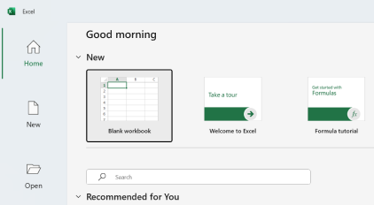
Primeira planilha
Crie uma planilha chamada lista-de-compras.xlsx com as colunas abaixo:
- Item
- Quantidade
- Valor unitario
- Valor total
Passo a passo
- Abra o Excel e crie uma pasta de trabalho em branco.
- Digite os cabecalhos na primeira linha.
- Preencha pelo menos dez itens.
- Ajuste a largura das colunas.
- Aplique bordas e formato de moeda nos valores.
Entendendo a tela do Excel sem pressa
- Celula: cada quadradinho da planilha.
- Coluna: grupo vertical identificado por letras, como A, B e C.
- Linha: grupo horizontal identificado por numeros, como 1, 2 e 3.
- Endereco: nome da celula. A1 fica na coluna A e linha 1.
- Barra de formulas: local onde aparece o conteudo da celula selecionada.
- Aba da planilha: fica embaixo e permite ter varias planilhas no mesmo arquivo.
Passo a passo bem devagar no Excel
- Abra o Excel pelo menu Iniciar.
- Escolha Pasta de trabalho em branco.
- Clique na celula A1 e digite Item.
- Clique na celula B1 e digite Quantidade.
- Clique na celula C1 e digite Valor unitario.
- Clique na celula D1 e digite Valor total.
- Clique na celula A2 e digite Arroz.
- Preencha as outras colunas com quantidade e valor.
- Salve o arquivo na pasta Curso de TI > Excel com o nome lista-de-compras.
Excel: formulas basicas
Formula e uma instrucao que faz o Excel calcular alguma coisa. Toda formula comeca com o sinal de igual. Se voce digitar 2+2 sem o sinal de igual, o Excel entende como texto. Se digitar =2+2, ele mostra o resultado.
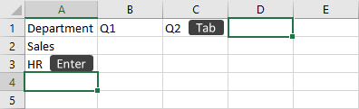
Formulas que o aluno deve dominar
- =A1+B1 para somar duas celulas.
- =A1-B1 para subtrair.
- =A1*B1 para multiplicar.
- =A1/B1 para dividir.
- =SOMA(A1:A10) para somar um intervalo.
- =MEDIA(A1:A10) para calcular a media.
Como pensar em formulas
Uma formula e como uma frase de calculo. Em vez de escrever "quantidade vezes preco", voce informa ao Excel quais celulas ele deve multiplicar. Se a quantidade esta em B2 e o valor unitario esta em C2, a formula do total fica =B2*C2.
| Simbolo | Significado | Exemplo |
|---|---|---|
| + | Somar | =A1+B1 |
| - | Subtrair | =A1-B1 |
| * | Multiplicar | =B2*C2 |
| / | Dividir | =A1/B1 |
Pratique na lista de compras
- Na coluna Valor total, multiplique quantidade por valor unitario.
- Use a alca de preenchimento para copiar a formula.
- Calcule o total geral da compra.
- Salve a planilha.
Erros comuns com formulas
- Esquecer o sinal de igual no comeco.
- Usar a letra O no lugar do numero 0.
- Digitar valor como texto, por exemplo "dez" em vez de 10.
- Apagar uma celula usada em formula.
- Confundir virgula e ponto. No Excel em portugues, geralmente usamos virgula em decimais: 10,50.
Excel: tabelas, filtros e classificacao
Quando uma planilha tem muitos dados, fica dificil encontrar informacoes manualmente. Tabelas, filtros e classificacao ajudam a organizar listas de clientes, produtos, vendas, presencas e controles financeiros.
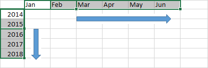
Exercicio guiado
Crie uma tabela de clientes ficticios com as colunas:
- Nome
- Cidade
- Telefone
- Produto de interesse
- Valor estimado
O que fazer
- Preencha pelo menos dez clientes.
- Transforme o intervalo em tabela.
- Filtre clientes de uma cidade.
- Classifique os valores do maior para o menor.
Passo a passo para transformar em tabela
- Confira se a primeira linha tem os titulos das colunas.
- Clique em qualquer celula dentro da lista.
- Clique na guia Inserir.
- Clique em Tabela.
- Confira se o Excel selecionou todos os dados.
- Marque a opcao Minha tabela tem cabecalhos, se aparecer.
- Clique em OK.
- Use as setinhas no cabecalho para filtrar ou classificar.
Perguntas que o aluno deve responder usando filtro
- Quais clientes sao da mesma cidade?
- Qual cliente tem o maior valor estimado?
- Qual produto aparece mais vezes?
- Quantos clientes tem valor acima de 100?
Excel: graficos basicos
Graficos transformam numeros em imagem. Eles ajudam a comparar vendas, mostrar crescimento, identificar gastos maiores e apresentar resultados com mais clareza. O grafico precisa ter titulo e mostrar dados corretos.
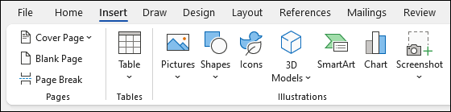
Tipos de grafico
- Colunas: bom para comparar valores.
- Barras: bom para listas com nomes maiores.
- Pizza: bom para mostrar partes de um total.
Pratique
- Crie uma planilha de vendas por produto.
- Selecione os dados.
- Insira um grafico de colunas.
- Adicione um titulo claro.
- Explique qual produto vendeu mais.
Como escolher o grafico certo
- Use colunas para comparar produtos, meses, pessoas ou categorias.
- Use barras quando os nomes forem compridos.
- Use pizza apenas quando quiser mostrar partes de um total.
- Nao use grafico 3D no inicio. Ele costuma atrapalhar a leitura.
Passo a passo para inserir grafico
- Organize os dados em duas colunas: nome e valor.
- Selecione os dados, incluindo os titulos.
- Clique na guia Inserir.
- Escolha Grafico de Colunas.
- Clique no titulo do grafico e escreva um titulo claro.
- Confira se os numeros do grafico batem com a planilha.
PowerPoint: criando uma apresentacao
O PowerPoint serve para criar apresentacoes em slides. Ele nao deve ser usado como um texto gigante na tela. Cada slide deve ter uma ideia principal, poucas frases e visual limpo. A fala do apresentador completa o que esta no slide.
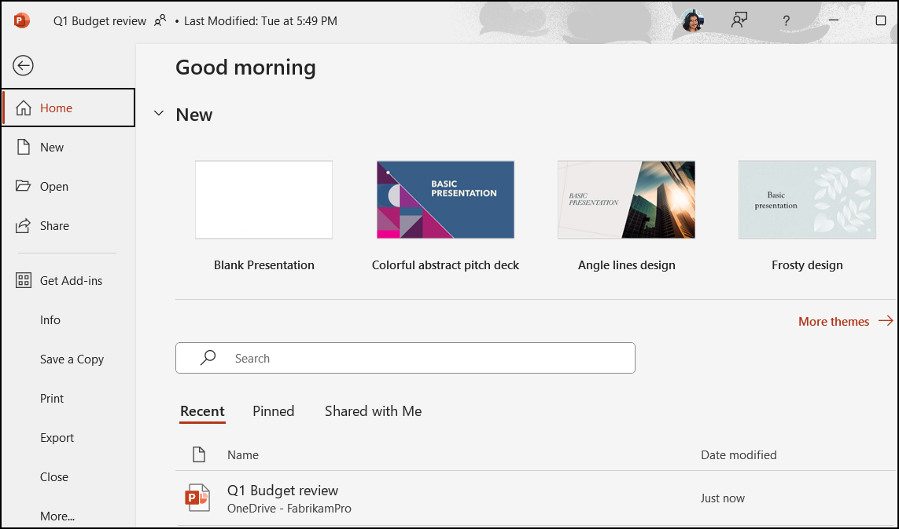
Estrutura simples
- Slide 1: titulo.
- Slide 2: apresentacao do tema.
- Slide 3: informacoes principais.
- Slide 4: imagem, grafico ou exemplo.
- Slide 5: conclusao.
Passo a passo bem devagar no PowerPoint
- Abra o PowerPoint pelo menu Iniciar.
- Escolha Apresentacao em branco.
- No primeiro slide, clique em Clique para adicionar titulo.
- Digite o titulo da apresentacao.
- Clique em Novo Slide.
- Escolha um layout simples, como Titulo e Conteudo.
- Digite poucas frases. Nao escreva textos enormes no slide.
- Salve o arquivo na pasta Curso de TI > PowerPoint.
Atividade
Crie uma apresentacao de cinco slides sobre voce, seu trabalho, sua cidade ou um tema de estudo.
PowerPoint: visual e apresentacao oral
Uma apresentacao boa precisa ser legivel. Use contraste entre fundo e texto, escolha uma fonte simples e mantenha um padrao visual. Transicoes podem ser usadas, mas sem exagero. O objetivo e comunicar bem, nao encher os slides de efeitos.
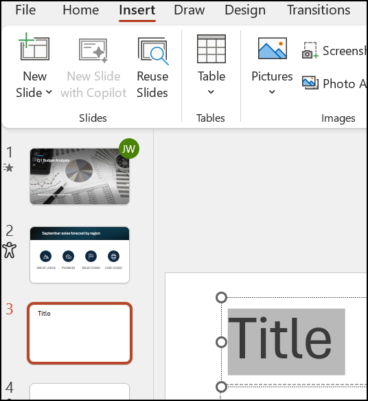
Regras simples
- Use pouco texto por slide.
- Evite letras pequenas.
- Use imagens nitidas.
- Mantenha alinhamento.
- Treine antes de apresentar.
Como treinar uma apresentacao curta
- Leia o primeiro slide em silencio.
- Explique com suas palavras, sem ler tudo.
- Passe para o proximo slide.
- Use frases curtas.
- Se travar, olhe para o slide e continue pelo proximo ponto.
- Treine uma vez sozinho e uma vez para outra pessoa.
O que evitar nos slides
- Letra pequena demais.
- Fundo escuro com texto escuro.
- Mais de duas fontes diferentes.
- Muitas animacoes.
- Imagem esticada ou cortada de forma estranha.
Pratique
Revise a apresentacao da aula anterior e apresente em 2 a 3 minutos.
Integrando Word, Excel, PowerPoint e PDF
No trabalho, e comum usar varios programas juntos. Voce pode fazer os calculos no Excel, explicar os resultados no Word e apresentar os principais pontos no PowerPoint. Depois, pode salvar em PDF para enviar sem desorganizar a formatacao.
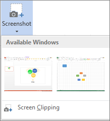
Exercicio guiado
- Abra a planilha de gastos criada no Excel.
- Copie uma tabela ou grafico.
- Cole no Word em um documento explicativo.
- Cole o grafico em uma apresentacao do PowerPoint.
- Salve pelo menos um arquivo em PDF.
Como copiar e colar entre programas
- No Excel, selecione a tabela ou o grafico.
- Aperte Ctrl+C para copiar.
- Abra o Word ou PowerPoint.
- Clique no lugar onde o conteudo deve aparecer.
- Aperte Ctrl+V para colar.
- Se ficar grande demais, clique na imagem ou objeto e ajuste pelos cantos.
- Salve o arquivo depois de colar.
Como salvar em PDF
- Abra o arquivo final no Word, Excel ou PowerPoint.
- Clique em Arquivo.
- Escolha Salvar como ou Exportar.
- Escolha PDF.
- Confira a pasta de destino.
- Clique em Salvar.
- Abra o PDF para conferir se ficou correto.
Organizacao final
Todos os arquivos devem ficar dentro da pasta Projeto Final, com nomes claros.
Projeto final: meu planejamento mensal
O projeto final mostra que o aluno aprendeu a usar as principais ferramentas do Bloco 1. O tema sera Meu planejamento mensal. O aluno deve criar um documento, uma planilha, uma apresentacao e um PDF.
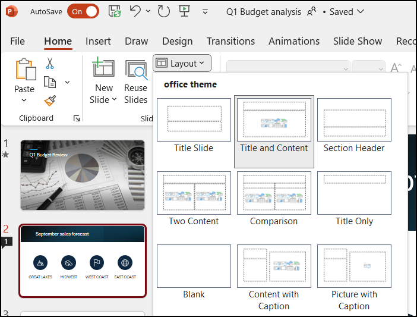
Entregas
- Documento no Word explicando o planejamento mensal.
- Planilha no Excel com entradas, gastos, formulas e grafico.
- Apresentacao no PowerPoint com 5 a 7 slides.
- Uma versao em PDF.
Roteiro completo do projeto final
- Abra a pasta Curso de TI.
- Entre na pasta Projeto Final.
- Crie ou mova para la o documento do Word.
- Crie ou mova para la a planilha do Excel.
- Crie ou mova para la a apresentacao do PowerPoint.
- Salve uma versao em PDF.
- Abra cada arquivo para conferir se nao esta vazio.
- Confira se a planilha tem formula funcionando.
- Confira se a apresentacao tem de 5 a 7 slides.
- Explique o projeto em voz alta, como se estivesse apresentando para outra pessoa.
Checklist final do aluno
- Eu sei ligar o notebook e usar o touchpad.
- Eu sei criar pastas e salvar arquivos no lugar certo.
- Eu sei criar um documento no Word.
- Eu sei montar uma planilha simples no Excel.
- Eu sei usar pelo menos uma formula.
- Eu sei criar um grafico.
- Eu sei criar slides simples no PowerPoint.
- Eu sei salvar ou exportar um arquivo em PDF.
Como saber se ficou bom
- Os arquivos estao organizados.
- A planilha calcula valores automaticamente.
- O grafico ajuda a entender os dados.
- A apresentacao e clara e legivel.
- O aluno consegue explicar o que fez.
Check de retencao do Bloco 1
Responda sem olhar a apostila primeiro. Depois clique em corrigir. O objetivo nao e decorar: e descobrir o que voce ja entendeu e o que precisa revisar antes de seguir para o proximo bloco.
Fontes das imagens
As imagens de apoio foram usadas para fins didaticos e mostram telas reais ou oficiais das ferramentas estudadas.
- Microsoft Support: imagens oficiais de Word, Excel, PowerPoint e recurso de captura de tela do Office.
- Wikimedia Commons: prints de Windows e Gerenciador de Arquivos com informacoes de licenca na pagina de origem.